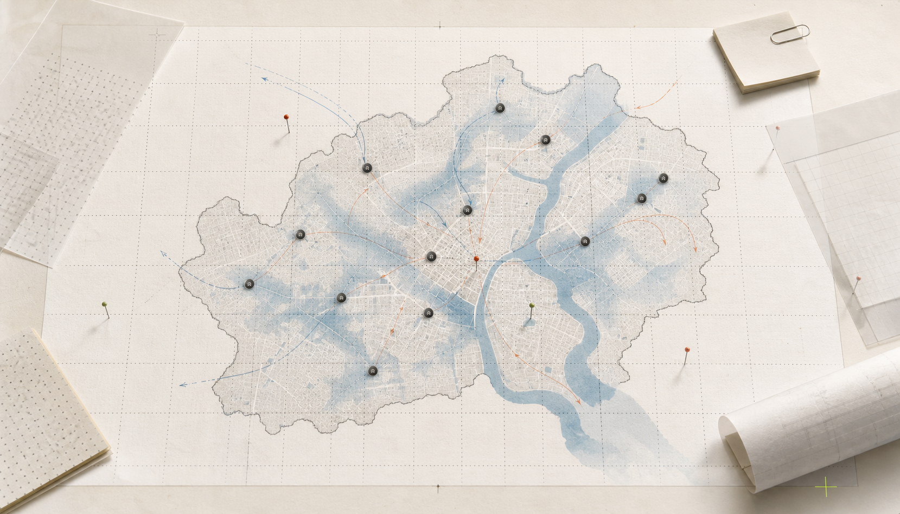
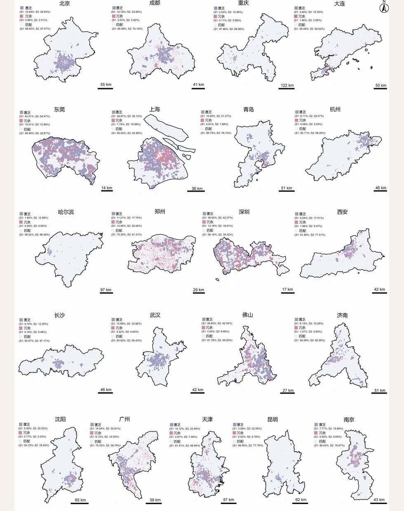
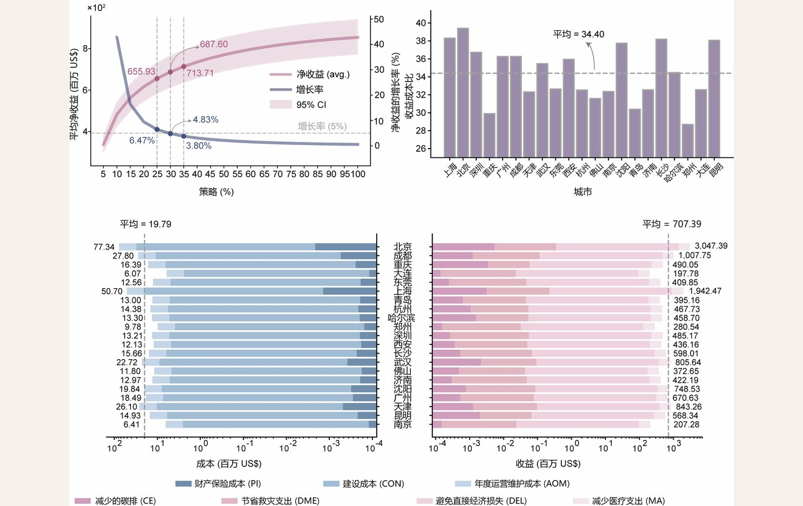

risk layer: flood exposure
demand: resident + commuter response
supply: shelter + public facility
decision: add / retrofit / coordinate
城市韧性决策支持
基于人群响应行为模拟的
城市内涝应急避难场所 供需匹配与优化 决策支持模型
评估内涝情景下的避难服务能力，判断需求与供给是否匹配。 形成短板诊断、设施优化和建设优先级建议。
服务超大城市避难设施专项规划、平急两用公共设施布局和近期建设项目安排。
$ shelter-priority --grid 1km


静态人口不能代表灾时需求
传统配置常把居住人口直接折算为避难需求，假定人和设施的关系不随灾情变化。内涝发生后，积水阻隔、道路绕行、设施可达性和从众行为会重塑人群流向，进而改变每个避难场所承受的真实压力。
系统把人群响应行为作为配置前提，先推演灾时动态需求，再进行供需匹配和补短板优先级排序。
METHOD
动态需求先行的配置方法
先推演灾时人群怎样移动，再判断避难设施哪里承压、哪里富余、哪里应优先补短板。
行为模拟
F = R + A + H
把积水排斥、设施吸引和从众效应转成移动方向。
供需诊断
Gap = D(t) - S
在 1km² 网格上比较动态需求与设施容量，区分承压、均衡和富余片区。
优化配置
P = Gap x BCR
按缺口强度与投入收益排序，给出近期建设和存量改造的先后次序。
人群移动模拟控制台
选择城市、参数和结果视图，查看灾时人群轨迹、需求热力和综合匹配结果。

超大城市供需错配识别
案例库用于比较不同城市的避难资源供给、灾时动态需求和设施补短板强度。

供需匹配呈现内缺外盈。
核心区集中性匮乏，郊区分散性冗余，匮乏区的流入人口高于冗余区。

DECISION
配置方案板

| 输出 | 依据 | 策略 | 结果 |
|---|---|---|---|
| 短板片区优先设施增补与改造范围 | Kneedle 最优点 | 增设或改造 | 收益增长率 4.83% |
| 收益-成本比多城市均值 | 成本效益测算 | 财政排序 | BCR 34.40 |
| 长期韧性评估2050 情景 | SSP5-8.5 气候情景 | 提前识别 | 定位未来资源缺口 |